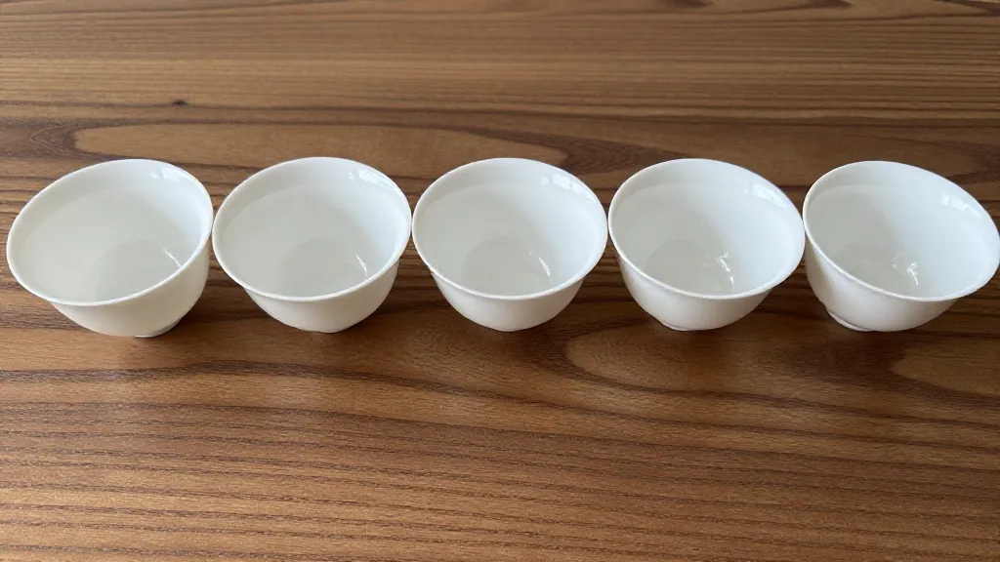

🏺 今儿个想跟大伙儿聊聊我茶桌上这几位 "老朋友"。
做茶这些年，凤凰单丛的香气千变万化，可要让这香完完全全地释放出来，还得看手里这把家伙什儿。常有客人问我，凤姐，你这茶为什么泡出来特别 "有魂"？我说，一半在茶叶，一半在茶器。
我茶席上最宝贝的是一把朱泥小壶，用了快十年，养得油润透亮。朱泥壶胎薄、透气，聚香又保温，跟凤凰单丛简直是天作之合。你试着用玻璃壶泡一泡，再用朱泥壶泡一泡，同样的鸭屎香，后者就是更 "抓人"—— 那香不是飘散的，是一团一团往你鼻子里钻的。这把小壶，装的不只是茶汤，更是工夫茶的气韵。
不过要说看茶的真面目，还得请出盖碗。白瓷盖碗最是公道，不夺香、不掩色，茶叶在里头怎么舒展、怎么沉浮，一眼看得明明白白。我最享受出汤前那几秒 —— 掀开碗盖，热气裹着兰花香、蜜香、栀子香一齐涌上来，低头看叶底，凤凰单丛的叶片又厚又软，绿中泛红，像刚从茶树上摘下来似的鲜活。这乐趣，是紫砂壶给不了的。
茶汤入杯那一刻，才是真的 "见山见水"。凤凰单丛的汤色，新茶是明亮的琥珀金，老枞偏深沉的橙黄，阳光底下看，透亮得像一汪山泉。我常跟客人说，先别急着喝，举起来对着光瞧瞧，那杯里晃动的哪里是茶，分明是凤凰山的云雾、乌岽山的晨曦。
若讲究到极致，水煮也得是老法子。我店里至今还留着一套炭炉砂铫，橄榄炭慢慢烧，砂铫里的水 "虾眼" 初现、蟹眼微生，这时候的水温最是活泛，能把单丛里那些深藏的香气一层层 "逼" 出来。如今电水壶方便，可那水总少了点 "生气"。就像现在机器人什么都能干了，可一双手工拉坯的壶、一炉炭火煮的水，那股子温度，是机器给不了的。
器为茶之父，这话我信。一把好壶、一只好杯，不只是工具，是人与茶之间的桥。你待器温柔，器便还你一杯好茶汤。茶器之美，美在合用，美在经年累月的陪伴，更美在每一次注水出汤时，那份让人心安的笃定。
今儿就聊到这儿，愿你的茶席上，也有几件让你心生欢喜的好器物。